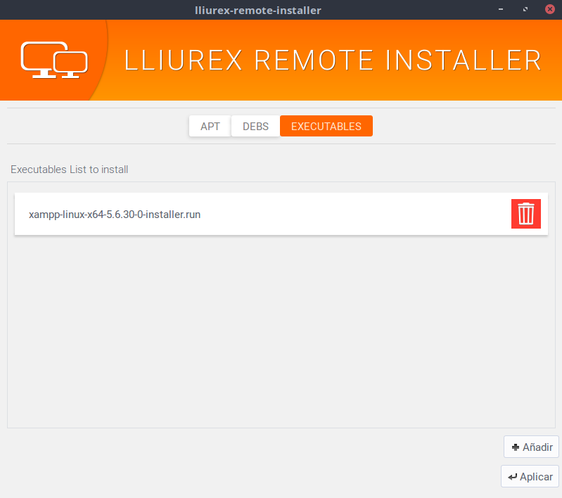

Instal·lador d'aplicacions
Pensat per a poder instal·lar programari en els clients d'aula de forma fàcil i ràpida.
- Lloc web: http://wiki.lliurex.net

Opcions

-
Instal·lació des de repositoris
Permet la instal·lació de paquets des d'un repositori. -
Instal·lació de paquets .DEB
Si tens un paquet .deb que vols instal·lar als clients. -
Fitxer executable
Serveix per instal·lar un fitxer executable.
Instal·lador des de repositoris

-
Diferents repositoris
Podem triar diferens origens del programari. -
Diferens paquets d'una tirada
No cal que tots siguen del mateix repositori.
Instal·lador de paquets .deb

-
Descarregat els debs
Descarregat el DEB que vulgues. -
Tria els que vulgues instal·lar
Ves amb compte amb les dependències -
Instal·la
Aplica i reinicia els clients
Instal·lador d'executables
-
Descarregat l'executable
Pot ser qualsevol tipus de fitxer executable. -
També pots crear-lo tu
creat els teus pròpis scripts